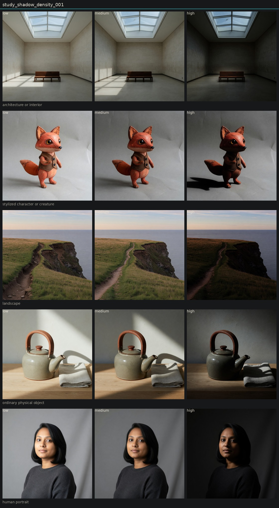

Controlled variation of shadow density
Hold subject via locked anchor images. image_edit each anchor to low, medium, and high of one candidate. Do not change other dimensions on purpose.
Darks do get heavier across subjects. The instrument often restages lighting to do it, especially on the teapot (new hard key and cast shadow) and the portrait (fill removed). Architecture and landscape are closer to a tone-mapping change. Not yet canonical.

human portrait

low · obs_0021

medium · obs_0022

high · obs_0023
ordinary physical object

low · obs_0024

medium · obs_0025

high · obs_0026
architecture or interior

low · obs_0027

medium · obs_0028

high · obs_0029
landscape

low · obs_0030

medium · obs_0031

high · obs_0032
stylized character or creature

low · obs_0033

medium · obs_0034

high · obs_0035
Entanglement
- Shadow density and key-to-fill ratio move together in Imagine edits.
- Object high changed source hardness, not only density.
- Low pole sometimes flattens lighting instead of lifting only the toe.
Next
- Hold lighting by prompting: keep the same key and fill, change only the tone curve of the darks.
- Paired study of shadow density vs key-to-fill vs black level on the same anchors.